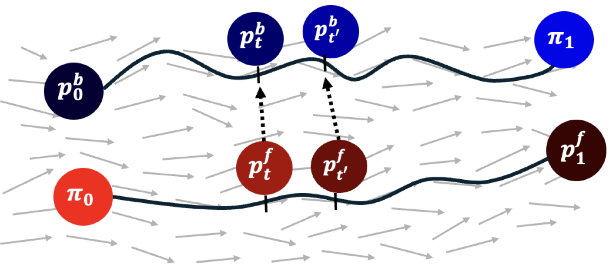
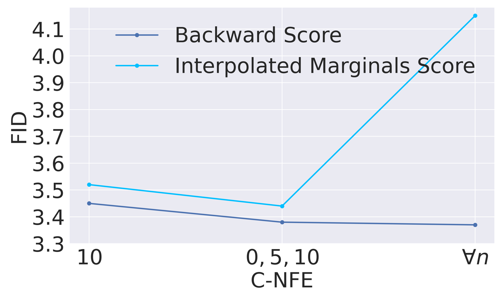

Correcting Flows with Marginal Matching
- Problem
- Reduce the error of a trained flow model at a fixed sampling budget.
- Base model
- Frozen OT-CFM and I-CFM U-Nets, sampled with RK4.
- Method
- Train a half-size corrector (score model or robust classifier) on marginals of the reversed ODE.
- Evaluated on
- Unconditional CIFAR-10 and ImageNet-64, measured with FID.
- Main caveat
- Requires training a second model, assumes invertibility, and reports FID as point estimates.
- My contribution
- I worked on the cycle-consistent correction applied during sampling, which targets the error of the learned model itself and not only discretization error.
Demos marked Illustration are small simulations of the idea and do not run our models. Results from the work itself are in the figures marked From our paper and in the charts and tables.
1. The problem: quality costs compute
Flow-based generative models produce images, audio, molecules and robot actions by transforming simple noise into data. Generation means solving an ordinary differential equation (ODE), and every step calls a neural network. These calls are counted as the number of function evaluations (NFE), and they are the main cost of sampling.
Fewer steps are faster but less accurate. In diffusion models, a well-known remedy is the predictor-corrector scheme: alternate between moving forward in time and refining the sample at the current time. Applying this idea to flow matching has been explored much less.
2. Background: flow matching in one paragraph
Flow matching learns a time-dependent velocity field vθ(t, x). During training, we pair a noise sample x₀ with a data sample x₁, pick a point on the straight line between them, and regress the network onto the direction of that line:
L(θ) = E ‖ vθ(t, xt) − (x₁ − x₀) ‖², xt = t·x₁ + (1 − t)·x₀
To generate, start at noise and integrate the velocity from t = 0 to 1. With a perfect network and solver we would land exactly on the data distribution. In practice we land on an approximation, π̂₁.
3. The key insight: reverse the imperfect flow
What should a corrector aim for? The obvious answer is the training interpolation between noise and data, but those marginals are not what the learned, imperfect flow actually transports.
Flows have a useful property: they are easy to reverse. Take real data and integrate the learned field backward from t = 1 to 0. This traces a family of backward marginals pbt. If the flow is invertible and integrated accurately, any sample on that path, followed forward with the same model, returns to the true data distribution.

Try it: correcting a flawed 2-D flow Illustration
The target is eight clusters on a circle. The flow is deliberately flawed, so forward samples (blue) miss them. Gold points are the backward marginal, computed by reversing the same flawed flow from the data. The corrector here is a simple transport step toward the gold distribution, standing in for the learned model. It moves samples onto the right clusters while preserving their spread, so it does not collapse them.
4. Theory: which corrections matter?
If the forward and backward marginals match at the end, they match at every time (Lemma 3.2). More usefully, we can bound the final error. Suppose a correction at time ti reduces the Wasserstein distance to the backward marginal by εi. For a field with Lipschitz constant L:
W₂(pb₁, pf₁) ≤ d₀ eL − Σi εi eL(1 − ti)
This formal statement requires a Lipschitz field, and the eL factor can make the bound loose, so we use it to reason about where corrections matter and not as a numerical prediction. It shows that steps are not equally valuable, and that the best schedule depends on how the corrector reduces error.
Try it: the value of each correction step Illustration
This plots the error bound over time with one correction. Compare a fixed-size reduction with a proportional one, then move the correction to see whether its timing changes the final bound.
This describes the bound. Which step helps most in practice also depends on how large each εi really is, as the ablations below show.
5. Two ways to build the corrector
- Score model. Learn the score of the backward marginals, the direction toward higher density, with denoising score matching. A single step along it is enough. It comes with a bound on the final distance, but it never sees forward samples during training. Cost: 1 NFE.
- Robust classifier. Train a time-dependent classifier to tell forward from backward samples, and follow its gradient toward "backward". It sees both distributions, but has no theoretical guarantee. Adversarial training and gradient alignment keep its gradients useful. Cost: 2 NFE.
Both use a U-Net with half the parameters of the flow model and were trained for 100,000 steps, with convergence observed by about 30,000 to 40,000. They are trained for a fixed time grid (11 marginals on CIFAR-10, 6 on ImageNet-64).
6. Results
CIFAR-10. The fair comparison is the same base flow at a similar compute budget, so the table includes plain RK4 at higher NFE.
| Sampler (OT-CFM) | NFE | FID |
|---|---|---|
| RK4 | 40 | 4.34 |
| RK4 + score (1 call) | 41 | 3.45 |
| RK4 + classifier (1 call) | 42 | 3.57 |
| RK4 + score (3 calls) | 43 | 3.38 |
| RK4 | 44 | 3.96 |
| RK4 + classifier (3 calls) | 46 | 3.48 |
| RK4 | 48 | 3.73 |
| RK4 + score (11 calls) | 51 | 3.37 |
| RK4 | 52 | 3.59 |
| RK4 | 60 | 3.47 |
| Adaptive (DOPRI5) | ~134 | 3.58 |
ImageNet-64. The sampler budget here is much smaller.
| Sampler (OT-CFM) | NFE | FID |
|---|---|---|
| RK4 | 20 | 17.99 |
| RK4 + score (1 call) | 21 | 15.91 |
| RK4 + score (2 calls) | 22 | 15.53 |
| RK4 | 24 | 16.60 |
| RK4 | 28 | 15.71 |
| OT-FM, adaptive (prior work) | 138 | 14.45 |
From our paper. Lower is better. A classifier call costs 2 NFE. Corrector networks have half the parameters of the flow, so counting each call as a full NFE is conservative.
On ImageNet-64, adding two correction evaluations to a 20-NFE sampler (FID 15.53) beats adding eight more ordinary solver evaluations (15.71). On CIFAR-10, the score model is consistent across two base flows (OT-CFM and I-CFM), while the classifier works better with OT-CFM.

7. What the ablations show
- Backward versus interpolated targets. With one or three corrections the two targets are close, at FID 3.45 vs. about 3.52 and 3.38 vs. about 3.44, so much of the gain comes from having a corrector at all. The clear difference appears with a correction at every step: the backward corrector holds at 3.37, while the interpolated one worsens to about 4.15.
- One step beats Langevin. Multi-step Langevin dynamics (50 or 100 steps) was both more expensive and worse than a single correction step.
- Timing depends on the corrector. The score model helps mostly at the middle and final steps, while the classifier improves more uniformly.
- Early versus late. Early corrections mainly affect overall structure, and late ones affect fine detail and residual noise.

8. How to read these results
- Small FID gaps need caution. Results are point estimates with no reported seed variation, so differences such as 3.45 vs. 3.38 should not be over-read. The gap from 4.34 to about 3.4 is the main result.
- Training cost is not in NFE. NFE counts sampling only. The corrector needs backward trajectories and its own training, which pays off when a model will be sampled many times.
- More compute still wins eventually. On ImageNet-64, a prior OT-FM model with an adaptive solver reaches a lower FID (14.45 at 138 NFE) than our 22-NFE sampler. The method targets the low-budget regime.
- Tuned on FID. The noise level σ and the correction steps were chosen through FID ablations, so the best values are somewhat optimistic.
- Memorization. Backward marginals start from training data, so we also measured FID against the CIFAR-10 test set. One score call improves it from 6.43 to 5.52, better than plain RK4 at 52 NFE (5.70). FID remains a limited test of memorization.
How this differs from prior work
Classic predictor-correctors for diffusion (Song et al.; UniPC) reuse the same network and refine toward the model's own marginals. Song & Lai propose a training-free corrector for flow models. Lezama et al. train a corrector for discrete diffusion. Reflow and distillation change or replace the generator. Marginal Matching keeps the flow frozen, trains a small dedicated corrector, and changes the target of correction to the reversed-ODE marginals.
9. Limitations and what comes next
- Reversibility is assumed. The method relies on an invertible flow, which we cannot verify in practice, so support comes from experiments.
- The bound uses unknown quantities. In practice we do not know the true error reduction at each step, and the classifier has no bound yet.
- An additional model must be trained, although it is smaller and cheaper than the flow.
- Code is planned for release upon publication.
- Next: approximately reversible models such as diffusion, and training the flow and corrector together.
Takeaways
- The correction target matters most when correcting often. The path your actual model needs differs from the path it was trained on, and repeated corrections toward the wrong path can undo the gain.
- Reversibility is a free source of training data for refining an ODE-based generator.
- A small post-hoc model can beat more solver steps, with no change to the original network.
Glossary
Show the glossary
- Flow matching: training a network to predict the velocity that transports noise to data.
- Marginal: the distribution of samples at one moment in time.
- Backward marginal: the distribution obtained by running the learned flow in reverse from real data.
- Predictor-corrector: alternating between advancing in time and refining at the current time.
- NFE: number of function evaluations, the count of network calls during sampling.
- FID: Fréchet Inception Distance, a measure of image quality, where lower is better.
- Wasserstein distance: a measure of how far one distribution must be moved to match another.
Citation
BibTeX
@article{bojan2026correcting,
title = {Correcting Flows with Marginal Matching},
author = {Bojan, Meital and Sellam, Nadav Bojan and Zisselman, Ev and Tamar, Aviv},
journal = {arXiv preprint arXiv:2611.23134},
year = {2026}
}